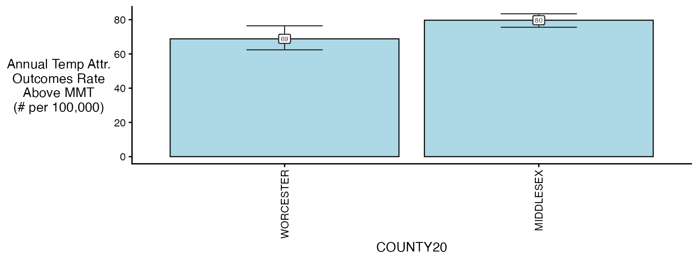
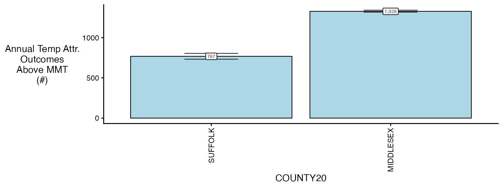
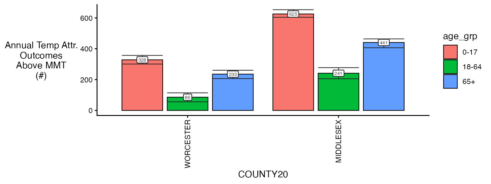
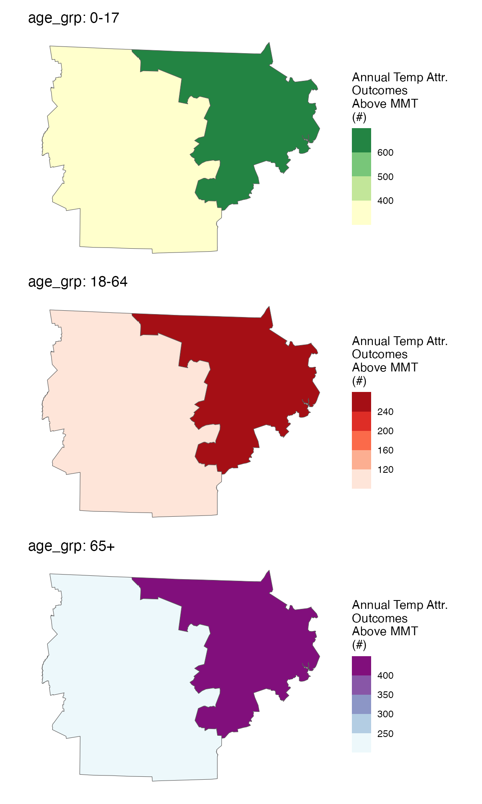

Calculating attributable numbers and rates in `cityHeatHealth`
attributable_number.RmdEstimating Attributable numbers (and rates of attributable numbers) are a key way that we can translate relative risks into numbers that are more tangible in public health settings. Below we provide easy functionality to go from our model objects to estimates of attributable numbers and rates.
Setup
The first step of calculating attributable numbers is having a population data estimate.
This varies a lot by place and dataset, so we don’t include
functionality for it (but an example of how this could be done can be
seen in vignette("get_pop_estimates")).
Assume you are starting with a dataset for the entire timeframe that looks like this:
library(data.table)
data("ma_pop_data")
setDT(ma_pop_data)
ma_pop_data
#> TOWN20 Female_0-17 Female_18-64 Female_65+ Male_0-17 Male_18-64
#> <char> <num> <num> <num> <num> <num>
#> 1: BARNSTABLE 3899 15017 6014 4499 14035
#> 2: BOURNE 1891 5751 3212 1489 5302
#> 3: BREWSTER 634 2518 2007 833 2628
#> 4: CHATHAM 163 1477 1759 480 1265
#> 5: DENNIS 573 3792 3133 784 4101
#> ---
#> 347: WEST BOYLSTON 619 2021 1107 604 2554
#> 348: WEST BROOKFIELD 343 1162 578 243 1002
#> 349: WESTMINSTER 847 2371 1131 762 2028
#> 350: WINCHENDON 1254 3318 711 1031 3134
#> 351: WORCESTER 18779 67750 15995 21129 69365
#> Male_65+
#> <num>
#> 1: 5458
#> 2: 2810
#> 3: 1721
#> 4: 1463
#> 5: 2359
#> ---
#> 347: 790
#> 348: 495
#> 349: 1081
#> 350: 924
#> 351: 11173Need to do some transformations:
- pivot longer
- variable clean
Note again, this processing will vary by application so this approach is not prescriptive !
Pivot longer:
ma_pop_data_long <- melt(
ma_pop_data,
id.vars = "TOWN20",
variable.name = "sex_age",
value.name = "population"
)Variable clean:
ma_pop_data_long$sex_age <- as.character(ma_pop_data_long$sex_age)
varnames <- strsplit(ma_pop_data_long$sex_age, "_", fixed = T)
varnames <- data.frame(do.call(rbind, varnames))
names(varnames) <- c('sex', 'age_grp')
rr <- which(varnames$sex == 'Female')
varnames$sex[rr] <- 'F'
rr <- which(varnames$sex == 'Male')
varnames$sex[rr] <- 'M'
ma_pop_data_long$sex = varnames$sex
ma_pop_data_long$age_grp = varnames$age_grp
ma_pop_data_long$sex_age <- NULL
ma_pop_data_long
#> TOWN20 population sex age_grp
#> <char> <num> <char> <char>
#> 1: BARNSTABLE 3899 F 0-17
#> 2: BOURNE 1891 F 0-17
#> 3: BREWSTER 634 F 0-17
#> 4: CHATHAM 163 F 0-17
#> 5: DENNIS 573 F 0-17
#> ---
#> 2102: WEST BOYLSTON 790 M 65+
#> 2103: WEST BROOKFIELD 495 M 65+
#> 2104: WESTMINSTER 1081 M 65+
#> 2105: WINCHENDON 924 M 65+
#> 2106: WORCESTER 11173 M 65+We assume that these properties hold for the entire timeframe of our analysis, but you could also make a version of this dataset with a ‘year’ column.
Now, quickly get a condPois_1stage() and
condPois_2stage() objects to use in testing: exposures
library(data.table)
exposure_columns <- list(
"date" = "date",
"exposure" = "tmax_C",
"geo_unit" = "TOWN20",
"geo_unit_grp" = "COUNTY20"
)
ma_exposure_matrix <- make_exposure_matrix(
subset(ma_exposure, COUNTY20 %in% c('MIDDLESEX', 'SUFFOLK') &
year(date) %in% 2012:2015),
exposure_columns)
#> Warning in make_exposure_matrix(subset(ma_exposure, COUNTY20 %in% c("MIDDLESEX", : check about any NA, some corrections for this later,
#> but only in certain columnsoutcomes
outcome_columns <- list(
"date" = "date",
"outcome" = "daily_deaths",
"factor" = 'age_grp',
"factor" = 'sex',
"geo_unit" = "TOWN20",
"geo_unit_grp" = "COUNTY20"
)
ma_outcomes_tbl <- make_outcome_table(subset(ma_deaths,COUNTY20 %in% c('MIDDLESEX', 'SUFFOLK') &
year(date) %in% 2012:2015), outcome_columns)models
ma_model <- condPois_2stage(ma_exposure_matrix, ma_outcomes_tbl, verbose = 1)
#> -- validation passed
#> -- stage 1
#> -- mixmeta
#> -- stage 2Estimating the AN
Ok so now you pass in population.
So now estimate the AN as a full object
Remember that this needs to be compatible for:
single zone
ma model with ma_model$
_ma model with factor ma_model$
0-17> I think you can handle this the same way you did before, with recursion
Now in this second step, you can choose the aggregation level that you want results to.
In this block you need:
what spatial resolution are you summarizing to: ->> ‘geo_unit’, ‘geo_unit_grp’, or ‘all’
are you just getting the impacts that are > then the centering point: ->> lets just assume yes for now, can always go back and change it
ma_AN <- calc_AN(ma_model, ma_outcomes_tbl, ma_pop_data_long,
agg_type = 'TOWN20',
join_cols = 'TOWN20',
nsim = 100,
verbose = 2)
#> -- validation passed
#> -- estimate in each geo_unit
#> 5 10 15 20 25 30 35 40 45 50 55
#> -- summarize by simulation
#> 5 10 15 20 25 30 35 40 45 50 55 60 65 70 75 80 85 90 95 100
ma_AN$`_`$rate_table
#> TOWN20 COUNTY20 population above_MMT mean_annual_attr_rate_est
#> <char> <char> <num> <lgcl> <num>
#> 1: ACTON MIDDLESEX 23864 TRUE 82.79207
#> 2: ACTON MIDDLESEX 23864 FALSE 0.00000
#> 3: ARLINGTON MIDDLESEX 45906 TRUE 87.53758
#> 4: ARLINGTON MIDDLESEX 45906 FALSE 0.00000
#> 5: ASHBY MIDDLESEX 3187 TRUE 78.12990
#> ---
#> 112: WINCHESTER MIDDLESEX 22809 FALSE 0.00000
#> 113: WINTHROP SUFFOLK 19031 TRUE 89.63008
#> 114: WINTHROP SUFFOLK 19031 FALSE 0.00000
#> 115: WOBURN MIDDLESEX 40992 TRUE 68.91284
#> 116: WOBURN MIDDLESEX 40992 FALSE 0.00000
#> mean_annual_attr_rate_lb mean_annual_attr_rate_ub
#> <num> <num>
#> 1: 61.87982 105.07014
#> 2: 0.00000 0.00000
#> 3: 70.11379 103.99185
#> 4: 0.00000 0.00000
#> 5: 53.73588 98.09578
#> ---
#> 112: 0.00000 0.00000
#> 113: 71.92081 105.98464
#> 114: 0.00000 0.00000
#> 115: 56.00071 85.22928
#> 116: 0.00000 0.00000
ma_AN$`_`$number_table
#> TOWN20 COUNTY20 population above_MMT mean_annual_attr_num_est
#> <char> <char> <num> <lgcl> <num>
#> 1: ACTON MIDDLESEX 23864 TRUE 19.75750
#> 2: ACTON MIDDLESEX 23864 FALSE 0.00000
#> 3: ARLINGTON MIDDLESEX 45906 TRUE 40.18500
#> 4: ARLINGTON MIDDLESEX 45906 FALSE 0.00000
#> 5: ASHBY MIDDLESEX 3187 TRUE 2.49000
#> ---
#> 112: WINCHESTER MIDDLESEX 22809 FALSE 0.00000
#> 113: WINTHROP SUFFOLK 19031 TRUE 17.05750
#> 114: WINTHROP SUFFOLK 19031 FALSE 0.00000
#> 115: WOBURN MIDDLESEX 40992 TRUE 28.24875
#> 116: WOBURN MIDDLESEX 40992 FALSE 0.00000
#> mean_annual_attr_num_lb mean_annual_attr_num_ub
#> <num> <num>
#> 1: 14.767000 25.073937
#> 2: 0.000000 0.000000
#> 3: 32.186437 47.738500
#> 4: 0.000000 0.000000
#> 5: 1.712563 3.126313
#> ---
#> 112: 0.000000 0.000000
#> 113: 13.687250 20.169937
#> 114: 0.000000 0.000000
#> 115: 22.955813 34.937188
#> 116: 0.000000 0.000000you can change agg_type to be a different spatial
resolution – either whatever the group variable was or “all”
ma_AN <- calc_AN(ma_model, ma_outcomes_tbl, ma_pop_data_long,
agg_type = 'COUNTY20',
join_cols = 'TOWN20',
nsim = 100,
verbose = 2)
#> -- validation passed
#> -- estimate in each geo_unit
#> 5 10 15 20 25 30 35 40 45 50 55
#> -- summarize by simulation
#> 5 10 15 20 25 30 35 40 45 50 55 60 65 70 75 80 85 90 95 100
ma_AN$`_`$rate_table
#> COUNTY20 population above_MMT mean_annual_attr_rate_est
#> <char> <num> <lgcl> <num>
#> 1: MIDDLESEX 1623109 TRUE 79.71161
#> 2: MIDDLESEX 1623109 FALSE 0.00000
#> 3: SUFFOLK 785443 TRUE 91.91405
#> 4: SUFFOLK 785443 FALSE 0.00000
#> mean_annual_attr_rate_lb mean_annual_attr_rate_ub
#> <num> <num>
#> 1: 76.87088 81.88135
#> 2: 0.00000 0.00000
#> 3: 76.72278 102.17823
#> 4: 0.00000 0.00000
ma_AN$`_`$number_table
#> COUNTY20 population above_MMT mean_annual_attr_num_est
#> <char> <num> <lgcl> <num>
#> 1: MIDDLESEX 1623109 TRUE 1293.8063
#> 2: MIDDLESEX 1623109 FALSE 0.0000
#> 3: SUFFOLK 785443 TRUE 721.9325
#> 4: SUFFOLK 785443 FALSE 0.0000
#> mean_annual_attr_num_lb mean_annual_attr_num_ub
#> <num> <num>
#> 1: 1247.6982 1329.0236
#> 2: 0.0000 0.0000
#> 3: 602.6137 802.5517
#> 4: 0.0000 0.0000See that the numbers are roughly the same for Suffolk county ? They won’t be exactly the same because of how the averaging works.
Some plot functions exist:
plot(ma_AN, table_type = 'rate', above_MMT = T)
plot(ma_AN, table_type = 'rate', above_MMT = F)
Estimating the AN - single
check of single
# run the model
m2 <- condPois_1stage(exposure_matrix = ma_exposure_matrix,
outcomes_tbl = ma_outcomes_tbl,
multi_zone = TRUE)
ma_AN_s1 <- calc_AN(m2, ma_outcomes_tbl, ma_pop_data_long,
agg_type = 'COUNTY20',
join_cols = 'TOWN20',
nsim = 100,
verbose = 2)
#> -- validation passed
#> -- estimate in each geo_unit
#> 5 10 15 20 25 30 35 40 45 50 55
#> -- summarize by simulation
#> 5 10 15 20 25 30 35 40 45 50 55 60 65 70 75 80 85 90 95 100
ma_AN_s1$`_`$rate_table
#> COUNTY20 population above_MMT mean_annual_attr_rate_est
#> <char> <num> <lgcl> <num>
#> 1: MIDDLESEX 1623109 TRUE 81.71987
#> 2: MIDDLESEX 1623109 FALSE 0.00000
#> 3: SUFFOLK 785443 TRUE 97.70585
#> 4: SUFFOLK 785443 FALSE 0.00000
#> mean_annual_attr_rate_lb mean_annual_attr_rate_ub
#> <num> <num>
#> 1: 81.10122 82.63056
#> 2: 0.00000 0.00000
#> 3: 93.21673 102.38692
#> 4: 0.00000 0.00000
plot(ma_AN_s1, "num", above_MMT = T)
Estimating the AN - with factors
In the case where you have factors, you can easily extend this
ma_outcomes_tbl_fct <- make_outcome_table(subset(ma_deaths,COUNTY20 %in% c('MIDDLESEX', 'SUFFOLK') &
year(date) %in% 2012:2015),
outcome_columns,
collapse_to = 'age_grp')
ma_model_fct <- condPois_2stage(ma_exposure_matrix, ma_outcomes_tbl_fct, verbose = 1)
#> < age_grp : 0-17 >
#> -- validation passed
#> -- stage 1
#> -- mixmeta
#> -- stage 2
#> < age_grp : 18-64 >
#> -- validation passed
#> -- stage 1
#> -- mixmeta
#> -- stage 2
#> < age_grp : 65+ >
#> -- validation passed
#> -- stage 1
#> -- mixmeta
#> -- stage 2
ma_AN_fct <- calc_AN(ma_model_fct, ma_outcomes_tbl_fct,
ma_pop_data_long,
agg_type = 'COUNTY20',
join_cols = 'TOWN20',
nsim = 100,
verbose = 1)
#> < age_grp : 0-17 >
#> -- validation passed
#> -- estimate in each geo_unit
#> -- summarize by simulation
#> < age_grp : 18-64 >
#> -- validation passed
#> -- estimate in each geo_unit
#> -- summarize by simulation
#> < age_grp : 65+ >
#> -- validation passed
#> -- estimate in each geo_unit
#> -- summarize by simulation
plot(ma_AN_fct, "num", above_MMT = T)
These results are fictional of course but show what kind of outputs can be made easily.
spatial_plot(ma_AN_fct, shp = ma_counties, table_type = "num", above_MMT = T)